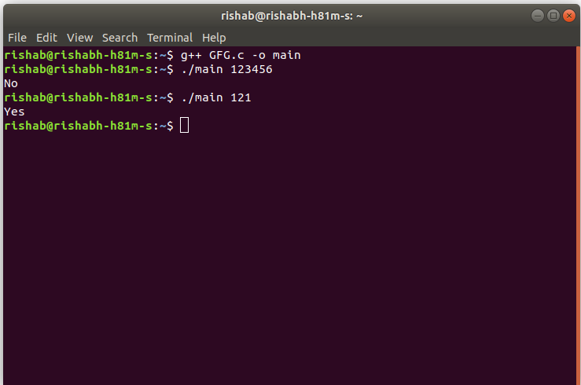
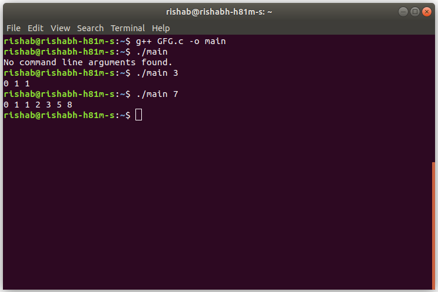

.png)

| TCS Coding practice Question |
Given a number, the task is to check if this number is Palindrome or not using Command Line Arguments.
Example:
Input: 123
Output: No
Input: 585
Output: Yes
Approach:
- Since the number is entered as Command line Argument, there is no need for a dedicated input line
- Extract the input number from the command line argument
- This extracted number will be in String type.
- Convert this number into integer type and store it in a variable, say num
- Find the reverse of this number and store in a variable, say rev_num
- Check if this rev_num and num are same or not.
- If they are not same, the number is not Palindrome
- If they are same, the number is a Palindrome
- C
// C program to check if a number is Palindrome
// using command line arguments
#include<stdio.h>
#include <stdlib.h> /* atoi */
// Function to reverse the number
int reverseNumber(int num)
{
// Variable to store the
// resultant reverse number
int rev_num = 0;
// Traverse through the number digit by digit
While (num > 0) {
// Append the last digit of num
// as the next digit of rev_num
rev_num = rev_num * 10 + num % 10;
// Remove the last digit from the num
num = num / 10;
}
// Return the reversed number
Return rev_num;
}
// Function to reverse a string
int isPalindrome(int num)
{
int rev_num = reverseNumber(num);
if (num == rev_num)
return 1;
else
return 0;
}
// Driver code
int main(int argc, char* argv[])
{
int num, res = 0;
// Check if the length of args array is 1
if (argc == 1)
printf("No command line arguments found.\n");
else{
// Get the command line argument and
// Convert it from string type to integer type
// using function "atoi( argument)"
num = atoi(argv[1]);
// Check if it is Palindrome
res = isPalindrome(num);
// Check if res is 0 or 1
if (res == 0)
// Print No
printf("No\n");
else
// Print Yes
printf("Yes\n");
}
return 0;
}
Output: C
| TCS Coding practice Question |
Given a number ‘n’, the task is to print the Fibonacci series using Command Line Arguments. The Fibonacci numbers are the numbers in the following integer sequence.
0, 1, 1, 2, 3, 5, 8, 13, 21, 34, 55, 89, 144, ……..
Example:
Input: n = 3
Output: 0, 1, 1
Input: 7
Output: 0, 1, 1, 2, 3, 5, 8
Approach:
- Since the number is entered as Command line Argument, there is no need for a dedicated input line
- Extract the input number from the command line argument
- This extracted number will be in String type.
- Convert this number into integer type and store it in a variable, say num
- Find the reverse of this number and store in a variable, say rev_num
- Check if this rev_num and num are same or not.
- If they are not same, the number is not Palindrome
- If they are same, the number is a Palindrome
- C
// C program to print the Fibonacci Series
// using command line arguments
#include<stdio.h>
#include <stdlib.h> /* atoi */
// Function to print the Fibonacci Series
void void fib(int n)
{
int a = 0, b = 1, c, i;
if (n <= 1)
printf("%d ", a);
else {
printf("%d %d ", a, b);
for (i = 3; i <= n; i++) {
c = a + b;
a = b;
b = c;
printf("%d ", c);
}
printf("\n");
}
}
// Driver code
int main(int argc, char* argv[])
{
int num, res = 0;
// Check if the length of args array is 1
if (argc == 1)
printf("No command line arguments found.\n");
else {
// Get the command line argument and
// Convert it from string type to integer type
// using function "atoi( argument)"
num = atoi(argv[1]);
// Print the Fibonacci series
fib(num);
}
return 0;
}
Output: C
| TCS Coding practice Question |
Given a number, the task is to find the Factorial of this number using Command Line Arguments. Factorial of a non-negative integer is the multiplication of all integers smaller than or equal to n.
Example:
Input: 3
Output: 6
Explanation: 1 * 2 * 3 = 6
Input: 6
Output: 720
Explanation: 1 * 2 * 3 * 4 * 5 * 6 = 720
Approach:
- Since the number is entered as Command line Argument, there is no need for a dedicated input line
- Extract the input number from the command line argument
- This extracted number will be in String type.
- Convert this number into integer type and store it in a variable, say num
- Find the reverse of this number and store in a variable, say rev_num
- Check if this rev_num and num are same or not.
- If they are not same, the number is not Palindrome
- If they are same, the number is a Palindrome
- C
// C program to find factorial of a number
// using command line arguments
#include<stdio.h>
#include <stdlib.h> /* atoi */
// Function to find factorial of given number
unsigned int factorial(unsigned int n)
{
int res = 1, i;
for (i = 2; i <= n; i++)
res *= i;
return res;
}
// Driver code
int main(int argc, char* argv[])
{
int num, res = 0;
// Check if the length of args array is 1
if (argc == 1)
printf("No command line arguments found.\n");
else {
// Get the command line argument and
// Convert it from string type to integer type
// using function "atoi( argument)"
num = atoi(argv[1]);
// Find the factorial
printf("%d\n", factorial(num));
}
return 0;
}
Output: C
| Third largest element in an array of distinct elements |
Given an array of n integers, find the third largest element. All the elements in the array are distinct integers.
Example:
Input: arr[ ] = {1, 14, 2, 16, 10, 20}
Output: The third Largest element is 14
Explanation: Largest element is 20, second largest element is 16
and third largest element is 14
Input: 6
Output: 720
Explanation:1 * 2 * 3 * 4 * 5 * 6 = 720
Approach:
- Since the number is entered as Command line Argument, there is no need for a dedicated input line
- Extract the input number from the command line argument
- This extracted number will be in String type.
- Convert this number into integer type and store it in a variable, say num
- Find the reverse of this number and store in a variable, say rev_num
- Check if this rev_num and num are same or not.
- If they are not same, the number is not Palindrome
- If they are same, the number is a Palindrome
- C
// C program to find Third Largest number of array
// using command line arguments
#include<stdio.h>
#include <stdlib.h> /* atoi */
void thirdLargest(int arr[], int arr_size)
{
/* There should be atleast three elements */
if (arr_size < 3)
{
printf(" Invalid Input ");
retun;
}
// Find first largest element
int first = arr[0];
for (int i = 1; i < arr_size ; i++)
if (arr[i] > first)
first = arr[i];
// Find second largest element
int second = INT_MIN;
for (int i = 0; i < arr_size ; i++)
if (arr[i] > second && arr[i] < first)
second = arr[i];
// Find third largest element
int third = INT_MIN;
for (int i = 0; i < arr_size ; i++)
if (arr[i] > third && arr[i] < second)
third = arr[i];
printf("The third Largest element is %d\n", third);
}
/* Driver program to test above function */
int main()
{
int arr[] = {12, 13, 1, 10, 34, 16};
int n = sizeof(arr)/sizeof(arr[0]);
thirdLargest(arr, n);
return 0;
}
Output: C
Complexity Analysis:
Time Complexity: O(n).
As the array is iterated thrice and is done in a constant time.
Space complexity: O(1).
No extra space is needed as the indices can be stored in constant space.